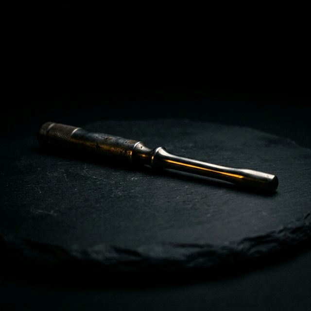

The Toll is paid.
Your confession has entered the Abyss.
The Mentor will now perform a clinical deconstruction of your Shadow. This process requires 48 to 72 hours of surgical silence. You will be contacted only if your Caliber is found sufficient for integration. Do not seek us; we will find you.